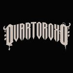

Flix Barbershop - Desenvolvi uma landing page para a Flix Barbershop, projetada para atrair novos
clientes e promover os serviços da barbearia. O site inclui uma seção "Sobre Nós", que apresenta a
história e os valores da barbearia. Utilizei a API do Google Maps para incorporar um mapa interativo,
além de links diretos para os aplicativos da Uber, Waze e Moovit, permitindo que os usuários
encontrem facilmente a localização. A página também apresenta fotos internas e externas do
estabelecimento, bem como perfis dos barbeiros, com informações sobre suas especialidades. Para
facilitar a contratação dos serviços, criei uma tabela de preços dos planos da barbearia,
acompanhada de um botão de agendamento via WhatsApp, acessível em toda a página. Este projeto
me proporcionou a oportunidade de aplicar na prática os conhecimentos adquiridos durante o curso
técnico e gerar resultados tangíveis para o cliente, contribuindo para o aumento da clientela da
barbearia.

Theo Kant - Em Andamento - Fui contratado pelo músico Theo Kant para criar um site que
funcionasse como um hub central para todas as suas redes sociais e trabalhos artísticos. O site
apresenta, na página inicial, os projetos mais recentes, com links diretos para suas músicas em
plataformas como Spotify, YouTube, Deezer e SoundCloud. A estrutura inclui uma seção de galeria,
onde são exibidas fotos dos shows e videoclipes produzidos, permitindo que os fãs acompanhem
seu trabalho visual. Também implementei uma seção de contato, além de informações sobre shows
e uma biografia do artista. A logo de Theo Kant é destacada no topo da página, proporcionando uma
navegação intuitiva de volta à home. O objetivo deste projeto foi consolidar todas as informações do
artista e de sua produtora, Quarto Roxo, em um único espaço acessível e atrativo, facilitando a
conexão com os fãs e a divulgação de seu trabalho. Essa experiência me permitiu desenvolver
habilidades em design e usabilidade, além de reforçar meu compromisso em atender às
necessidades do cliente.
Roadmap
Esutudar e aplicar SEO em proximos projetos
Tirar certificações em frameworks de JavaScript para uso no Front-End
Aprender mais sobre as IAs
Aprofundar e desenvolver conhecimentos de Back-End